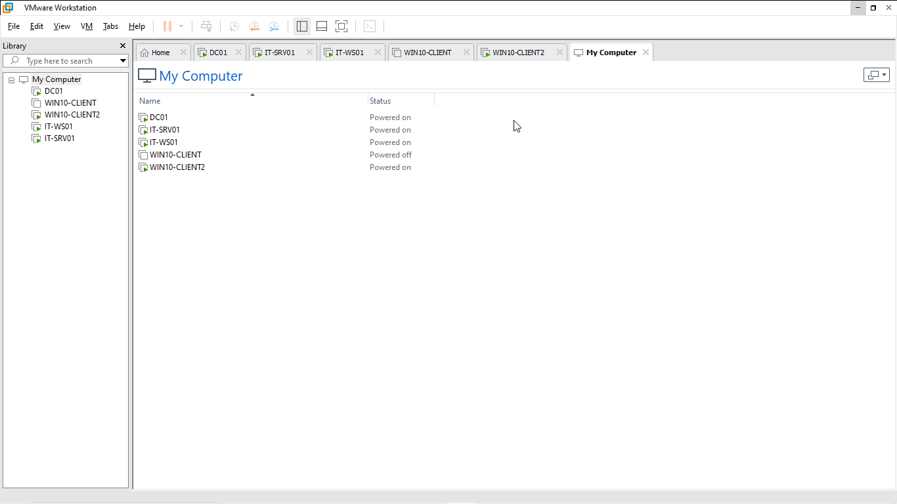
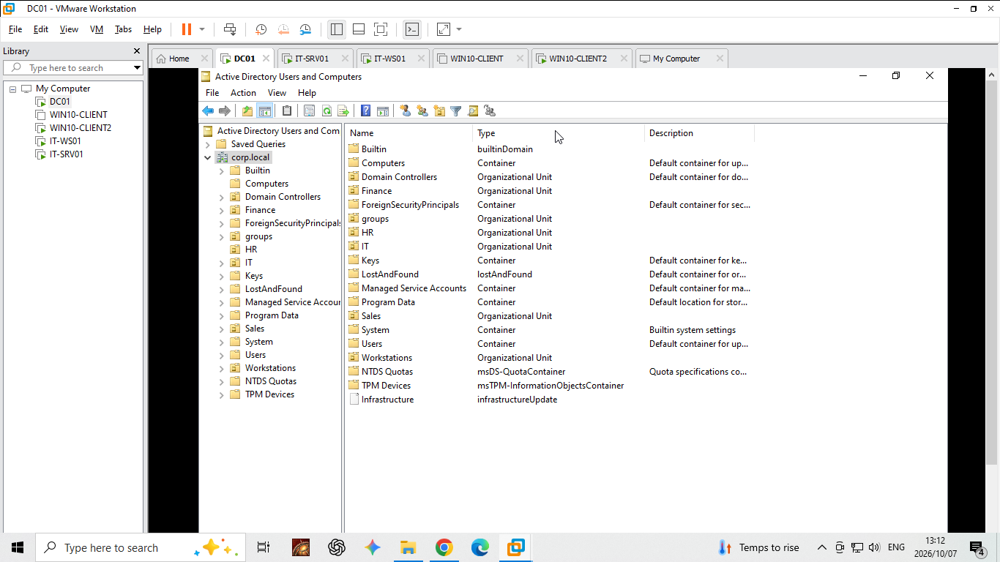
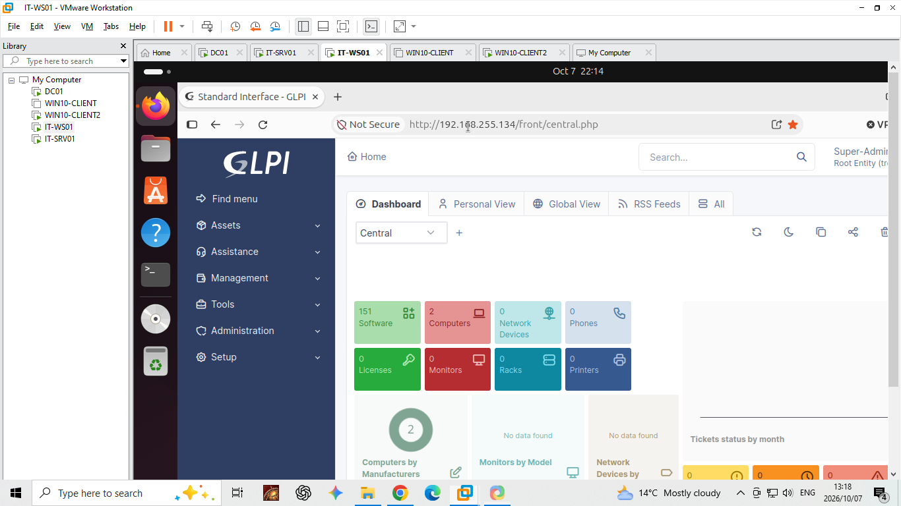
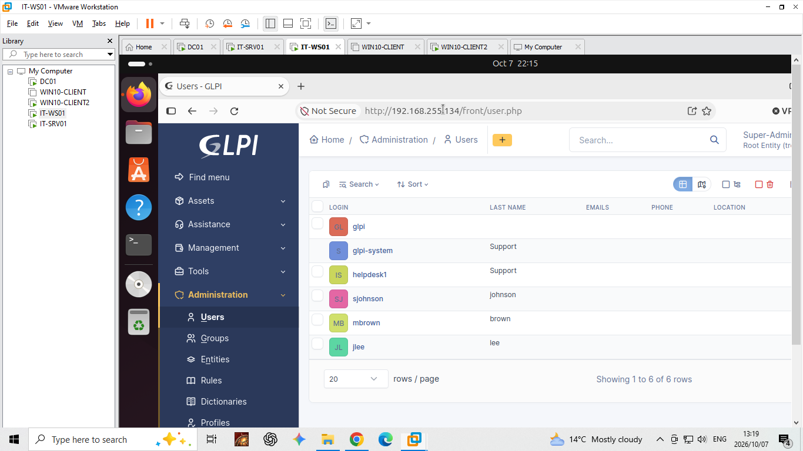
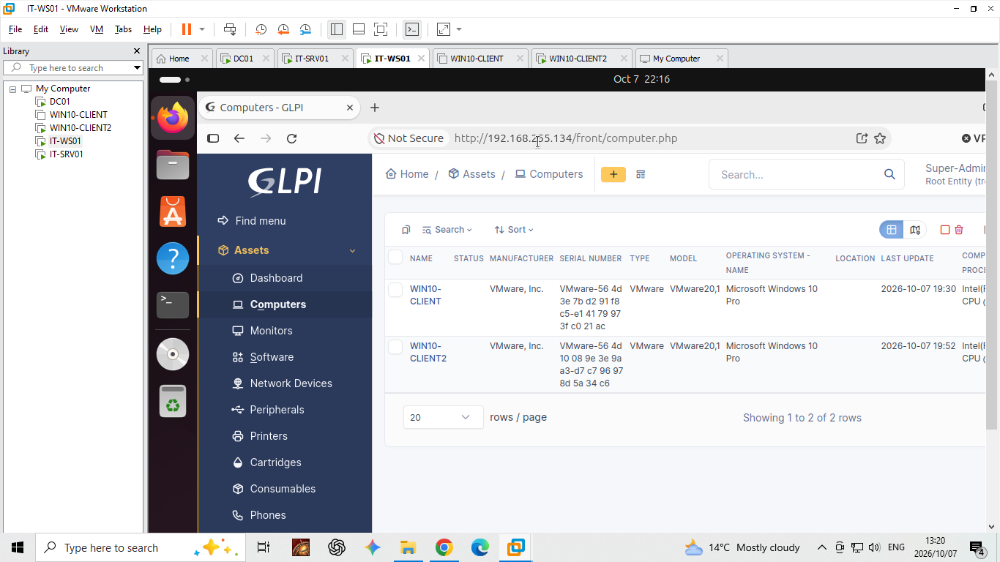
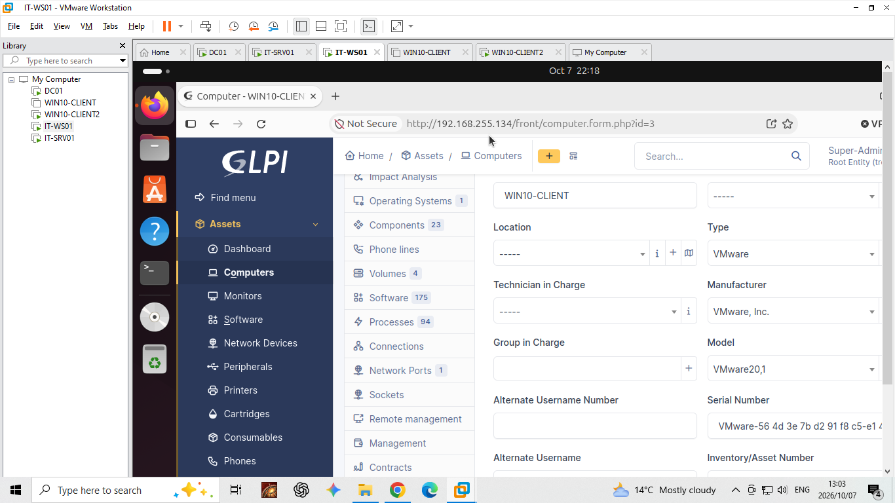
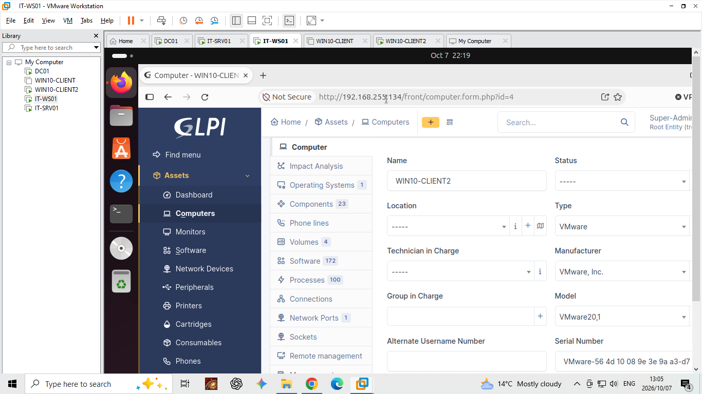
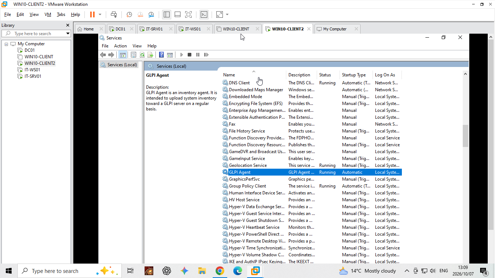

IT Support & Service Desk | Home
This project demonstrates a simulated Level 1 IT Support workflow using GLPI in a virtual corporate environment. The exercise involved managing an HR shared-drive incident, documenting the support process and restoring access to the affected resource.
The project combines ticket management, asset inventory, Active Directory, Windows workstation support and structured troubleshooting.
The environment was built using VMware Workstation and contains Windows and Linux virtual machines configured for a simulated corporate network.

Figure 1: Virtual Lab Environment
The VMware environment contains the domain controller, GLPI
server, technician workstation and Windows client computers.

Figure 2: Active Directory Structure
The corp.local domain provides centralized directory services
for the simulated corporate environment.
GLPI serves as the central ticketing and asset management platform in this lab. The following evidence shows the application, configured users and inventoried Windows workstations.

Figure 3: GLPI Dashboard
The main interface provides access to asset management,
administration and support functions.

Figure 4: User Administration
User records configured in GLPI for the simulated support environment.

Figure 5: Computer Inventory
Both Windows client workstations appear in the GLPI asset inventory.

Figure 6: WIN10-CLIENT Asset Record
An individual Windows workstation record can be inspected
in GLPI to review its inventory information.

Figure 7: WIN10-CLIENT2 Asset Record
The workstation associated with the troubleshooting exercise
is recorded in the inventory.

Figure 8: GLPI Agent Service
The GLPI Agent is running on the Windows client to support
inventory collection.
This demonstration shows the ticket-creation workflow in GLPI. Recording an incident allows the reported issue to be tracked and provides a record for investigation and resolution.
This demonstration follows an HR shared-drive incident through investigation and corrective action. The objective was to determine why the mapped drive was not appearing, correct the identified problem and verify that the drive became available.
This project demonstrates a ticket-driven support workflow, from recording the reported problem through investigation, corrective action and verification. It highlights the importance of structured troubleshooting, maintaining accurate records and confirming that a solution works before closing an incident.